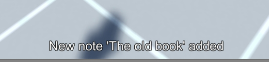

Attached Notes are a special type of Interactable because they are used to compliment other types through a passive interaction. For example, you might attach a note to a journal or a statue or other object that provides context and background about the object, or serves as a reminder of the object the player saw.
Below is an image showing the inspector of the example Journal object with a Note Attached.
When the note is retrieved, a text and sound notification will be presented at the bottom of the screen:
Notes are automatically included in saved game data. To read the note contents, open the Notes tab in the inventory screen and click on the title of interest:
You can attach a note to any type of Interactable object. But if you want a literal note in your game (e.g. a yellow sticky note) with a note as its only result, just make a Static type interactable and attach the FPEAttachedNote script to it.